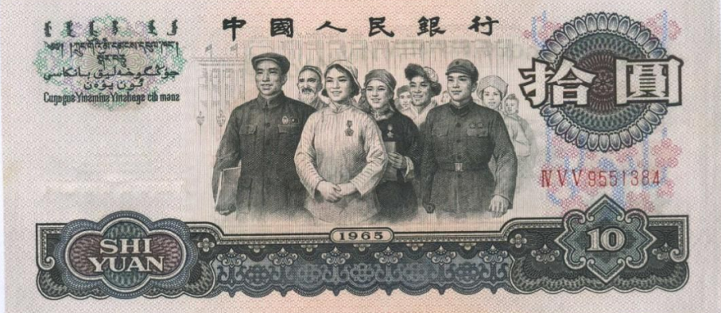

侯一民艺术作品赏析
侯一民，1930年生于河北高阳
新中国第一代美术家
第三、四套人民币的设计者之一
曾任中央美院第一副院长
壁画系主任、油画系副主任
中国壁画学会会长
中国美术家协会常务理事
侯一民先生因设计人民币
被称为“最富有”的画家
第四套人民币从10元开始到1角
正面主景都是我国有代表性的
民族人物头像
每人兜里都曾有一幅“侯一民”大团结
在“文化大革命”时期
这件作品被江青定为“为刘少奇
树立丰碑的黑画”
在举国上下进行过批判
直到刘少奇得以平反
这幅作品才重新回到人们的视野中

《毛泽东与安源矿工》
此作品定稿于1976年
这幅画面用温和的暖色调勾染
借着小矿灯发出的微弱光线
青年毛泽东正在宣传
矿工们围着他 或立或坐
或靠着坑木桩或倚着镐头把
人物的动作、姿态自然
《六亿神州尽舜尧》
这幅油画的印刷品发行了上百万张，在中国广为人知
1946年，侯一民考入北平艺专，担任地下党北平艺专支部书记画面中，青年学生手持油灯一面收听电台，一面印刷传单，画面色调灰暗，更加衬托灯光的温暖，寓意在青年人身上闪耀着希望的光芒。
是描绘中国人民志愿者跨过鸭绿江的历史油画，作品横向构图、视野开阔，以夜色比喻朝鲜人民的境况，画面中朝鲜的土地已经满目疮痍，朝鲜人民欣喜地迎接志愿者的队伍。
是巨幅壁画，长近200米、高2.5米，在中国壁画学会会长侯一民先生的倡导之下，由中央美术学院中国壁画学会高研班师生创作艺术再现了汶川地震抗震救灾的全过程，展示存在于普通中国人血脉中的人间大爱。
《吹牛图》
《京城说尽贪污风》
侯一民很幽默，他自称杂家
他说：“油画界认为我们已下岗转业，
国画界也不认为我们是国画家，
雕塑界称我们是‘杂牌军’，
媒体把我们当做‘画钞票的’，
我们住的村里人叫我‘泥人侯’。”
侯一民先生说：“什
么是现实主义？如果
说的极端一点，现实
主义就是作者用自己
的生命来换取，是作
者一种切身的体验和
自己全部情感的投入，
甚至是生命的投入。”


请长按二维码，关注“博索艺术”，
或者直接添加（“+”）“bonshop”。